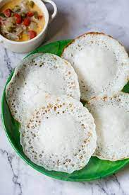

Food Gallery
Fried chicken
Fried chicken, also known as Southern fried chicken is a dish consisting of chicken pieces that have been coated with seasoned flour or batter and pan-fried, deep fried, pressure fried, or air fried.
Read More
Biriyani
Biryani is a mixed rice dish originating among the people of the Indian subcontinent. It is made with spices, rice, and meat, or eggs or vegetables such as potatoes in certain varieties.
Read More
Shawarma
Shawarma is a popular Levantine Arab dish consisting of meat cut into thin slices, stacked in a cone-like shape, and roasted on a slowly-turning vertical rotisserie or spit.
Read More
Dosa
A dosa is a thin pancake or crepe originating from South India, made from a fermented batter predominantly consisting of lentils and rice.
Read More
Idiyappam
Idiyappam, also known as string hopper / nool puttu, or noolappam, chomai, indiappa is a rice noodle dish originating from the Indian states of Tamil Nadu and Kerala.
Read More
Appam

Appam is a type of pancake, originating from South India, made with fermented rice batter and coconut milk, common in Kerala, Sri Lanka, Tamil Nadu.
Read More
Falooda
A falooda is an Indo/Pakistani version of a cold dessert made with noodles. It has origins in the Persian dish faloodeh, variants of which are found across West, Central, and South Asia.
Read More
Iced coffee
Iced coffee is a coffee beverage served cold. It may be prepared either by brewing coffee normally and then serving it over ice or in cold milk, or by brewing the coffee cold.
Read More
Burger
A hamburger is a food, typically considered a sandwich, consisting of one or more cooked patties—usually ground meat, typically beef—placed inside a sliced bread roll or bun.
Read More